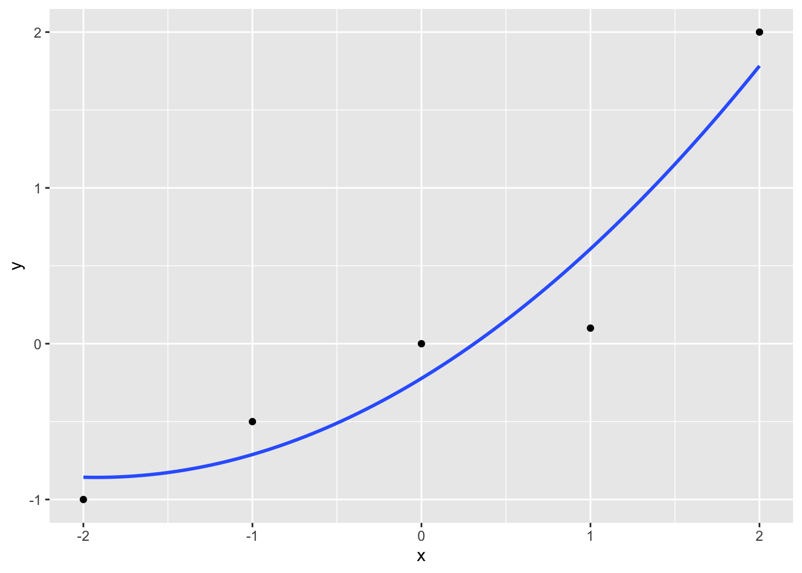
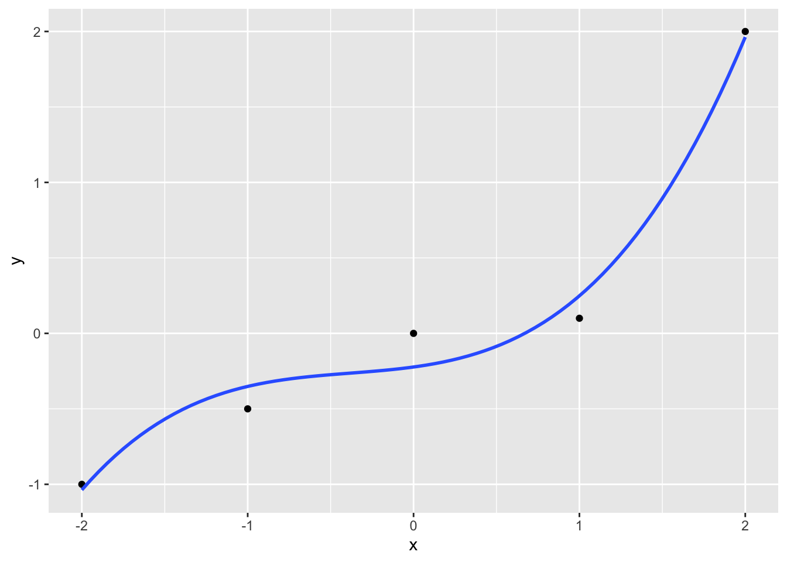
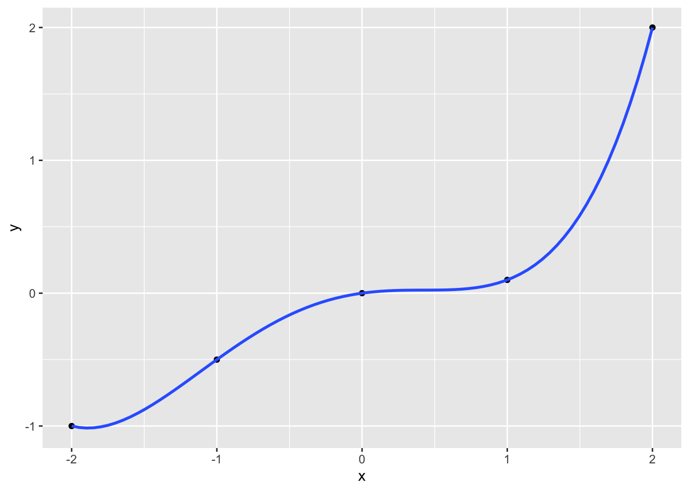

4 Statistisches Lernen
4.1 Lernsteuerung
4.1.1 Vorbereitung
- Lesen Sie die Hinweise zum Modul.
- Installieren (oder Updaten) Sie die für dieses Modul angegeben Software. Lesen Sie die Literatur.
4.1.2 Lernziele
- Sie können erläutern, was man unter statistischem Lernen versteht. Sie wissen, war Overfitting ist, wie es entsteht, und wie es vermieden werden kann. Sie kennen verschiedenen Arten von statistischem Lernen und können Algorithmen zu diesen Arten zuordnen.
4.1.3 Literatur
- Rhys, Kap. 1
- evtl. Sauer, Kap. 15
4.1.4 Hinweise
- Bitte beachten Sie die Hinweise zum Präsenzunterricht und der Streamingoption.
- Bitte stellen Sie sicher, dass Sie einen einsatzbereiten Computer haben und dass die angegebene Software (in aktueller Version) läuft.
4.1.5 R-Pakete
Benötigte R-Pakete für dieses Kapitel:
4.2 Was ist Data Science?
Es gibt mehrere Definitionen von Data Science, aber keinen kompletten Konsens. Baumer, Kaplan, und Horton (2017) definieren Data Science wie folgt (S. 4):
The science of extracting meaningful information from data.\(\square\)
Auf der anderen Seite entgegen viele Statistiker: “Hey, das machen wir doch schon immer!”.
Eine Antwort auf diesen Einwand ist, dass in Data Science nicht nur die Statistik eine Rolle spielt, sondern auch die Informatik sowie - zu einem geringen Teil - die Fachwissenschafte (“Domäne”), die sozusagen den Empfänger bzw. die Kunden oder den Rahmen stellt. Dieser “Dreiklang” ist in folgendem Venn-Diagramm dargestellt.
4.3 Was ist Machine Learning?
Definition 4.1 Maschinelles Lernen (ML), oft auch (synonym) als statistisches Lernen (statistical learning) bezeichnet, ist ein Teilgebiet der künstlichen Intelligenz (KI; artificial intelligence, AI) (Rhys 2020). ML wird auch als data-based bezeichnet in Abgrenzung von rule-based, was auch als “klassische KI” bezeichnet wird, vgl. Abbildung fig-ai-ml2.
flowchart LR
subgraph KI[Künstliche Intelligenz KI]
rb[rule based]
db[data based]
end
In beiden Fällen finden Algorithmen Verwendung.
Definition 4.2 (Algorithmus) Algorithmen sind nichts anderes als genaue Schritt-für-Schritt-Anleitungen, um etwas zu erledigen.\(\square\)
Beispiel 4.1 Ein Kochrezept ist ein klassisches Beispiel für einen Algorithmus.\(\square\)
Hier findet sich ein Beispiel für einen einfachen Additionsalgorithmus.
{kind=link}
Es gibt viele ML-Algorithmen, vgl. Abbildung fig-algos.
flowchart LR
subgraph KI[KI]
subgraph ML[ML]
A[Regression]
B[Neuronale Netze]
C[weitere]
end
end
4.3.1 Rule-based
Klassische (ältere) KI implementiert Regeln “hartverdrahtet” in ein Computersystem. Nutzer füttern Daten in dieses System. Das System leitet dann daraus Antworten ab.
Regeln kann man prototypisch mit Wenn-Dann-Abfragen darstellen:
lernzeit <- c(0, 10, 10, 20)
schlauer_nebensitzer <- c(FALSE, FALSE, TRUE, TRUE)
for (i in 1:4) {
if (lernzeit[i] > 10) {
print("bestanden!")
} else {
if (schlauer_nebensitzer[i] == TRUE) {
print("bestanden!")
} else print("Durchgefallen!")
}
}
## [1] "Durchgefallen!"
## [1] "Durchgefallen!"
## [1] "bestanden!"
## [1] "bestanden!"Sicherlich könnte man das schlauer programmieren, vielleicht so:
4.3.2 Data-based
ML hat zum Ziel, Regeln aus den Daten zu lernen. Man füttert Daten und Antworten in das System, das System gibt Regeln zurück.
James u. a. (2021) definieren ML so: Nehmen wir an, wir haben die abhängige Variable \(Y\) und \(p\) Prädiktoren, \(X_1,X_2, \ldots, X_p\). Weiter nehmen wir an, die Beziehung zwischen \(Y\) und \(X = (X_1, X_2, \ldots, X_p)\) kann durch eine Funktion \(f\) beschrieben werden. Das kann man so darstellen:
\[Y = f(X) + \epsilon\]
ML kann man auffassen als eine Menge an Verfahren, um \(f\) zu schätzen.
Ein Beispiel ist in Abb. Abbildung fig-statlearning gezeigt (James u. a. 2021).

Natürlich kann \(X\) mehr als eine Variable beinhalten, vgl. Abbildung fig-sl2) (James u. a. 2021).

Anders gesagt: traditionelle KI-Systeme werden mit Daten und Regeln gefüttert und liefern Antworten. ML-Systeme werden mit Daten und Antworten gefüttert und liefern Regeln zurück, s. Abbildung fig-ki-ml2.
flowchart LR subgraph rb[rule-based] D[Daten] -->A[Antworten] R[Regeln] -->A end subgraph db[data-based] D2[Daten] --> R2[Regeln] A2[Antworten] --> R2 end
4.4 Modell vs. Algorithmus
4.4.1 Modell
Ein Modell, s. Abb. Abbildung fig-vw) (Spurzem 2017)!

Wie man sieht, ist ein Modell eine vereinfachte Repräsentation eines Gegenstands.
Der Gegenstand definiert (gestaltet) das Modell. Das Modell ist eine Vereinfachung des Gegenstands, vgl. Abb. Abbildung fig-modell).

Im maschinellen Lernen meint ein Modell, praktisch gesehen, die Regeln, die aus den Daten gelernt wurden.
4.4.2 Beispiel für einen ML-Algorithmus
Unter einem ML-Algorithmus versteht man das (mathematische oder statistische) Verfahren, anhand dessen die Beziehung zwischen \(X\) und \(Y\) “gelernt” wird. Bei Rhys (2020) (S. 9) findet sich dazu ein Beispiel, das kurz zusammengefasst etwa so lautet:
Beispiel eines Regressionsalgorithmus
- Setze Gerade in die Daten mit \(b_0 = \hat{y}, b_1 = 0\)
- Berechne \(MSS = \sum (y_i - \hat{y_i})^2\)
- “Drehe” die Gerade ein bisschen, d.h. erhöhe \(b_1^{neu} = b_1^{alt} + 0.1\)
- Wiederhole 2-3 solange, bis \(MSS < \text{Zielwert}\)
Diesen Algorithmus kann man “von Hand” z.B. mit dieser App durchspielen.
4.5 Taxonomie
Methoden des maschinellen Lernens lassen sich verschiedentlich gliedern. Eine typische Gliederung unterscheidet in supervidierte (geleitete) und nicht-supervidierte (ungeleitete) Algorithmen, s. Abb. Abbildung fig-taxonomie).
flowchart LR ML[Maschinelles Lernen] SL[Supervidiertes Lernen] NSL[Nicht-supervidiertes Lernen] Re[Regression] Class[Klassifikation] DimRed[Dimensionsreduktion] Clust[Clustering] ML --> SL ML --> NSL SL --> Re SL --> Class NSL --> DimRed NSL --> Clust
4.5.1 Geleitetes Lernen
Die zwei Phasen des geleiteten Lernens sind in Abb. Abbildung fig-supervid) dargestellt.
flowchart TD
subgraph A[Lernphase]
B[Daten mit Antwort] --> C[Geleiteter Algorithmus]
C --> D[Modell]
end
subgraph E[Vorhersagephase]
H[Neue Daten ohne Antwort] --> F[Modell]
F --> G[Antworten]
end
A-->E
4.5.1.1 Regression: Numerische Vorhersage
ggplot(mtcars) +
aes(x = hp, y = mpg) +
geom_point() +
geom_smooth(method = "lm") +
theme_minimal()
Die Modellgüte eines numerischen Vorhersagemodells wird oft mit (einem der) folgenden Gütekoeffizienten gemessen:
- Mean Squared Error (Mittlerer Quadratfehler):
\[MSE := \frac{1}{n} \sum (y_i - \hat{y}_i)^2\]
- Mean Absolute Error (Mittlerer Absolutfehler):
\[MAE := \frac{1}{n} \sum |(y_i - \hat{y}_i)|\]
Wir sind nicht adaran interessiert die Vorhersagegenauigkeit in den bekannten Daten einzuschätzen, sondern im Hinblick auf neue Daten, die in der Lernphase dem Modell nicht bekannt waren.
4.5.1.2 Klassifikation: Nominale Vorhersage

Die Modellgüte eines numerischen Vorhersagemodells wird oft mit folgendem Gütekoeffizienten gemessen:
- Mittlerer Klassifikationfehler \(e\):
\[e := \frac{1}{n} I(y_i \ne \hat{y}_i) \]
Dabei ist \(I\) eine Indikatorfunktion, die 1 zurückliefert, wenn tatsächlicher Wert und vorhergesagter Wert identisch sind.
4.5.2 Ungeleitetes Lernen
Die zwei Phasen des ungeleiteten Lernens sind in Abbildung fig-unsuper dargestellt.
flowchart LR
subgraph X[Lernphase]
A[Daten ohne Antwort] --> B[Ungeleiteter Algorithmus]
B --> C[Modell]
end
subgraph D[Vorhersagephase]
E[Neue Daten, ohne Antwort] --> C2[Modell]
C2 --> F[Zuordnung zu den Regeln des Modells]
end
X--->D
Ungeleitetes Lernen kann man wiederum in zwei Arten unterteilen, vgl. Abb. Abbildung fig-ungel):
- Fallreduzierendes Modellieren (Clustering)
- Dimensionsreduzierendes Modellieren (z.B. Faktorenanalyse)

4.6 Ziele des ML
Man kann vier Ziele des ML unterscheiden, s. Abbildung fig-ziele.
flowchart TD ML[Maschinelles Lernen] V[Vorhersage] E[Erklärung/kausal] B[Beschreibung] DimRed[Dimensionsreduktion] ML --> V ML --> E ML --> B ML --> DimRed
Vorhersage bezieht sich auf die Schätzung der Werte von Zielvariablen (sowie die damit verbundene Unsicherheit). Erklärung meint die kausale Analyse von Zusammenhängen. Beschreibung ist praktisch gleichzusetzen mit der Verwendung von deskriptiven Statistiken. Dimensionsreduktion ist ein Oberbegriff für Verfahren, die die Anzahl der Variablen (Spalten) oder der Beobachtungen (Zeilen) verringert.s
Wie “gut” ein Modell ist, quantifiziert man in verschiedenen Kennzahlen; man spricht von Modellgüte oder model fit. Je schlechter die Modellgüte, desto höher der Modellfehler, vgl. Abbildung fig-resid.

Die Modellgüte eines Modells ist v.a. relevant für neue Beobachtungen, an denen das Modell nicht trainiert wurde.
4.7 Über- vs. Unteranpassung
Definition 4.3 (Overfitting) Ein Modell sagt die Trainingsdaten zu genau vorher - es nimmt Rauschen als “bare Münze”, also fälschlich als Signal. Solche Modelle haben zu viel Varianz in ihren Vorhersagen.\(\square\)
Definition 4.4 (Underfitting) Ein Modell ist zu simpel (ungenau, grobkörnig) - es unterschlägt Nuancen des tatsächlichen Musters. Solche Modelle haben zu viel Verzerrung (Bias) in ihren Vorhersagen.\(\square\)
4.7.1 Beispiel 1
Welches der folgenden Modelle (B,C,D) passt am besten zu den Daten (A), s. Abbildung fig-overunder), vgl. (Sauer 2019), Kap. 15?

Welches Modell wird wohl neue Daten am besten vorhersagen? Was meinen Sie?
Modell D zeigt sehr gute Beschreibung (“Retrodiktion”) der Werte, anhand derer das Modell trainiert wurde (“Trainingsstichprobe”). Wird es aber “ehrlich” getestet, d.h. anhand neuer Daten (“Test-Stichprobe”), wird es vermutlich nicht so gut abschneiden.
Es gilt, ein Modell mit “mittlerer” Komplexität zu finden, um Über- und Unteranpassung in Grenzen zu halten. Leider ist es nicht möglich, vorab zu sagen, was der richtige, “mittlere” Wert an Komplexität eines Modells ist, vgl. Abbildung fig-overfitting aus (Sauer 2019).
4.7.2 Beispiel 2
Abbildung fig-overfitting-4-plots zeigt Über- und Unteranpassung an einem Beispiel.
- Teil A: Die ‘wahre Funktion’, \(f\), die die Daten erzeugt. Man spricht auch von der “datengenerierenden Funktion”. Wir gehen gemeinhin davon aus, dass es eine wahre Funktion gibt. Das heißt nicht, dass die wahre Funktion die Daten perfekt erklärt, schließlich kann die Funktion zwar wahr, aber unvollständig sein oder unsere Messinstrumente sind nicht perfekt präzise.
- Teil B: Die Daten, erzeugt aus A plus etwas zufälliges Fehler (Rauschen).
- Teil C: Ein zu einfaches Modell: Unteranpassung. Vorhersagen in einer neuen Stichprobe (basierend auf dem datengenerierenden Prozess aus A) werden nicht so gut sein.
- Teil D: Ein zu komplexes Modell: Überanpassung. Vorhersagen in einer neuen Stichprobe (basierend auf dem datengenerierenden Prozess aus A) werden nicht so gut sein.
- Teil E: Ein Modell mittlerer Komplexität. Keine Überanpassung, keine Unteranpassung. Vorhersagen in einer neuen Stichprobe (basierend auf dem datengenerierenden Prozess aus A) werden gut sein.
4.7.3 Mittlere Modellkomplexität ist optimal
Wie Abbildung fig-overfitting zeigt, ist eine ‚Äúmittlere‚Äù Modellkomplexit√§t (oft) optimal. Fragt sich nur, was bzw. wo ‚Äúmittel‚Äù genau liegt. ü§∑‚Äç‚ôÄÔ∏è

4.7.4 Do-it-yourself Under-/Overfitting
Erkunden wir die Effekte von Under- und Overfitting an einem einfachen, simulierten Datenbeispiel:
Jetzt “fitten” wir eine zunehmend komplexe Funktion in diese Daten. Als Funktion wählen wir ein Polynom von Grad 1 bis 4.
- Ein Polynom 1. Grades ist eine lineare Funktion: \(y \sim x¹\).
- Ein Polynom 2. Grades ist eine quadratische Funktion: \(y \sim x² + x\)
- Ein Polynom \(n\). Grades ist eine Funktion der Form \(y \sim x^n + x^{n-1} + x^{n-2} + \ldots + x\)
Polynome werden flexibler (mehr “Täler” und “Gipfel” haben), je höher ihr Grad ist. Daher stellt sich die Frage, welcher Grad der “richtige” ist. Leider wissen wir in der Praxis nicht, welche Funktion die Natur ausgewählt hat. Daher wäre eine Lösung, die Funktion auszuwählen, welche die Daten am besten erklärt.
ggplot(d) +
aes(x, y) +
geom_point() +
geom_smooth(method = "lm", formula = y ~ x, se = FALSE)
ggplot(d) +
aes(x, y) +
geom_point() +
geom_smooth(method = "lm", formula = y ~ poly(x, 2), se = FALSE)
ggplot(d) +
aes(x, y) +
geom_point() +
geom_smooth(method = "lm", formula = y ~ poly(x, 3), se = FALSE)
ggplot(d) +
aes(x, y) +
geom_point() +
geom_smooth(method = "lm", formula = y ~ poly(x, 4), se = FALSE)


Wie man sieht, wird der Modellfehler immer kleiner, der “Fit” zunehmens besser.
Das kann man sich natürlich auch präziser berechnen lassen.
lm1 <- lm(y ~ poly(x, 1), data = d)
lm2 <- lm(y ~ poly(x, 2), data = d)
lm3 <- lm(y ~ poly(x, 3), data = d)
lm4 <- lm(y ~ poly(x, 4), data = d)
results <-
tibble(r2_lm1 = r2(lm1)$R2,
r2_lm2 = r2(lm2)$R2,
r2_lm3 = r2(lm3)$R2,
r2_lm4 = r2(lm4)$R2)
resultsJe komplexer das Modell, desto besser der Fit1 in dem Modell, in das Modell berechnet wurde.
Aber wie gut werden die Vorhersagen für neue Daten sein?
Sagen wir, in Wirklichkeit ist der datengenerierende Prozess2 (DGP) eine einfache lineare Funktion, plus etwas Rauschen (Fehler, \(\epsilon\)):
\(y \sim x + \epsilon\)
Sagen wir, das Rauschen ist normalverteilt mit Streuung 0.5.
Simulieren wir uns jetzt ein paar neue Daten, die aus dieser Funktion resultieren.
d1 <- tibble(
x = -2:2,
e = rnorm(n = 5, mean = 0, sd = .5),
y = x, # "wahrer" Wert
y_hat = y + e # beobachteter Wert mit Rauschen
)
d1Definition 4.5 (Train- und Test-Datensatz) Den Datensatz, in dem man ein Modell berechnet (“fittet”), nennt man auch Train-Datensatz. Einen anderen Datensatz, den man nutzt, um die Güte des Modells zu überprüfen, nennt man Test-Datensatz
Damit wir eine stabilere Datenbasis haben, simulieren wir aber pro X-Wert (-2, -1, 0, 1, 2) nicht nur einen Wert, sondern, sagen wir, 10:
d2 <-
tibble(
x = rep(-2:2, times = 10),
e = rnorm(n = 50, mean = 0, sd = .5), # Rauschen, Fehlerterm
y_hat = x, # "wahrer" Wert
y = x + e # beobachteter Wert mit Rauschen
)
d2ggplot(d) +
aes(x, y) +
geom_point() +
geom_smooth(method = "lm", formula = y ~ poly(x, 4), se = FALSE) +
geom_point(data = d2, color = "blue") 
Jetzt sieht das R-Quadrat schon nicht mehr so gut aus, s. Abbildung fig-polytest. Berechnen wir mal das R-Quadrat:
rsq(data = d2, truth = y, estimate = y_hat)Übungsaufgabe 4.1 (Overfitting) Simulieren Sie Daten, um ein Polynom 9. Grades zu berechnen. Die wahre Funktion soll eine einfache lineare Funktion sein (Polynom 1. Grades). Berechnen und visualisieren Sie das Modell. Vergleichen Sie dann das R-Quadrat im Train- und im Test-Datensatz.\(\square\)
Übungsaufgabe 4.2 (Overfitting 2) Simulieren Sie Daten, um ein Polynom 9. Grades zu berechnen. Die wahre Funktion soll eine Polynomfunktion sein (Polynom 2. Grades). Berechnen und visualisieren Sie das Modell. Vergleichen Sie dann das R-Quadrat im Train- und im Test-Datensatz.\(\square\)
4.8 No free lunch
Quelle: ImgFlip Meme Generator
Wenn \(f\) (die Beziehung zwischen \(Y\) und \(X\), auch datengenerierender Prozess genannt) linear oder fast linear ist, dann wird ein lineare Modell gute Vorhersagen liefern, vgl. Abb. @ref(fig:2-10) aus James u. a. (2021), dort zeigt die schwarze Linie den “wahren Zusammenhang”, also \(f\) an. In orange sieht man ein lineares Modell, in grün ein hoch komplexes Modell, das sich in einer “wackligen” Funktion - also mit hoher Varianz - niederschlägt. Das grüne Modell könnte z.B. ein Polynom-Modell hohen Grades sein, z. B. \(y = b_0 + b_1 x^{10} + b_2 x^9 + \ldots + b_11 x^1 + \epsilon\). Das lineare Modell hat hingegen wenig Varianz und in diesem Fall wenig Bias. Daher ist es für dieses \(f\) gut passend. Die grüne Funktion zeigt dagegen Überanpassung (overfitting), also viel Modellfehler (für eine Test-Stichprobe).
Die grüne Funktion in Abbildung fig-2-10 wird neue, beim Modelltraining unbekannte Beobachtungen (\(y_0\)) vergleichsweise schlecht vorhersagen. In Abbildung fig-2-11 ist es umgekehrt.

Betrachten wir im Gegensatz dazu Abbildung fig-2-11 aus James u. a. (2021), die (in schwarz) eine hochgradig nichtlineare Funktion \(f\) zeigt. Entsprechend wird das lineare Modell (orange) nur schlechte Vorhersagen erreichen - es hat zu viel Bias, da zu simpel. Ein lineares Modell wird der Komplexität von \(f\) nicht gerecht, Unteranpassung (underfitting) liegt vor.

4.9 Bias-Varianz-Abwägung
Der Gesamtfehler \(E\) des Modells ist die Summe dreier Terme:
\[E = (y - \hat{y}) = \text{Bias} + \text{Varianz} + \epsilon\]
Dabei meint \(\epsilon\) den nicht reduzierbaren Fehler, z.B. weil dem Modell Informationen fehlen. So kann man etwa auf der Motivation von Studentis keine perfekte Vorhersage ihrer Noten erreichen (lehrt die Erfahrung).
Bias und Varianz sind Kontrahenten: Ein Modell, das wenig Bias hat, neigt tendenziell zu wenig Varianz und umgekehrt, vgl. Abbildung fig-bias-var aus Sauer (2019).

4.10 Vertiefung
- Verdienst einer deutschen Data Scientistin
- Weitere Fallstudie zum Thema Regression auf Kaggle
- Crashkurs Data Science (Coursera, Johns Hopkins University) mit ‘Star-Dozenten’
- Arbeiten Sie diese Regressionsfallstudie (zum Thema Gehalt) auf Kaggle auf
- Werfen Sie einen Blick in diese Fallstudie auf Kaggle zum Thema Hauspreise
- Wiederholen Sie unser Vorgehen in der Fallstudie zu den Flugverspätungen
.JPG){kind=link}